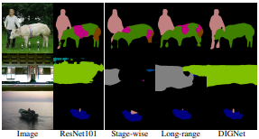
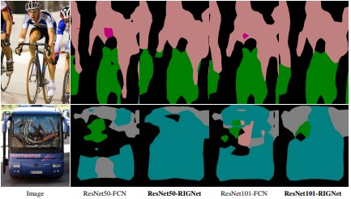
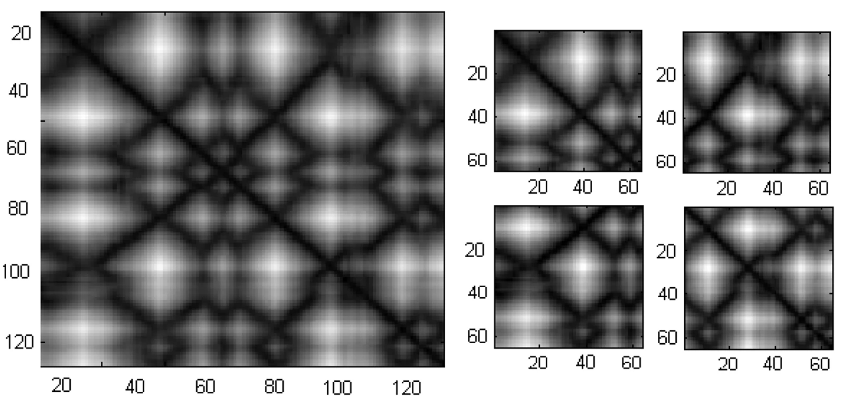

Rezaul Karim
PhD Student
Department of Electrical Engineering and Computer Science
York University
Email / Google Scholar / Github / LinkedIn
About Me
I am currently a PhD Student in the Department of EECS at the York University.
My research is focused on Deep Learning and its applications in Computer Vision.
News
- NEW 02/2023: One paper accepted to CVPR 2023 !
|
Selected Publications

|
MED-VT: Multiscale Encoder-Decoder Video Transformer with Application to Object Segmentation
Rezaul Karim, He Zhao, Richard P. Wildes, Mennatullah Siam
IEEE/CVF Conference on Computer Vision and Pattern Recognition (CVPR), 2023.
[paper]
|
|

|
Distributed iterative gating networks for semantic segmentation
Rezaul Karim, Amirul Islam, NDB Bruce
IEEE/CVF Winter Conference on Applications of Computer Vision (WACV), 2020.
[paper]
|

|
Lossless Image Compression Using List Update Algorithms
Arezoo Abdollahi, Neil Bruce, Shahin Kamali, and Rezaul Karim
String Processing and Information Retrieval: 26th International Symposium (SPIRE), 2019.
[paper] [code]
|
|

|
Recurrent iterative gating networks for semantic segmentation
Rezaul Karim, Amirul Islam, NDB Bruce
IEEE/CVF Winter Conference on Applications of Computer Vision (WACV), 2019.
[paper]
|
|

|
CoMOGrad and PHOG: from computer vision to fast and accurate protein tertiary structure retrieval
Rezaul Karim, Mohd Momin Al Aziz, Swakkhar Shatabda, M Sohel Rahman, Md Abul Kashem Mia, Farhana Zaman, Salman Rakin
Scientific Reports (Scientific Reports), 2015.
[paper]
|
|
See Google Scholar for full publication list |
|
|